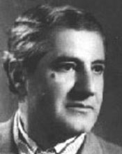

Գրիգոր Եղիազարյան
 Կոմպոզիտոր, մանկավարժ, երաժշտական-հասարակական գործիչ Գրիգոր Եղիազարյանի շուրջ կեսդարյա ստեղծագործական ուղին սերտորեն կապված է խորհրդահայ երաժշտության զարգացման կարևորագույն շրջանի հետ, որի ինքնատիպ դրսևորումների բյուրեղացմանը մասնակցել է ակտիվորեն: Գ.Եղիազարյանի ստեղծագործական գործունեության ձևավորման շրջանը զուգադիպեց Հայրենական մեծ պատերազմին նախորդող տարիներին: Աոաջին ուշագրավ նվաճումները նա ունեցավ պատերազմի տարիներին, ստեղծագործական ծանրակշիռ հաղթանակները՝ հետպատերազմյան շրջանում: Նշված ժամանակահատվածում շատ դեպքերում նոր բյուրեղացող սկզբունքների ձևավորման մասնակիցը լինելով՝ կոմպոզիտորն իր ներդրումով նպաստեց արժեքավոր գեղարվեստական երևույթների իմաստավորմանն ու զարգացմանը:
Հայ կոմպոզիտորական նոր դպրոցի ավագ սերունդն ըստ արժանվույն ներկայացնող Գրիգոր Եղիազարյանը երաժշտությանը հիմնականում հաղորդակից դարձավ զինվորական փողային նվագախմբում:
Ծագումով Սուրմալու գավառի Բլուր գյուղից, նա իր բազմանդամ ընտանիքի հետ Երևան տեղափոխվելուց հետո, ծանրագույն քաղաքական ու տնտեսական շրջանում (1918-1920) որբացավ, կորցրեց բոլոր մերձավորներին: Պատանեկության տարիների դժվարագույն պահին նրան փրկեց զինվորական ծառայությունը, իսկ մեծագույն մխիթարությունը երաժշտությունն եղավ: Շուրջ յոթ տարի նա նվագախմբի փողհարն էր: Ամենօրյա պարապմունքները հանգեցրին երաժշտության ասպարեզում մասնագիտանալու ձգտմանը:
Ապագա ստեղծագործողի ու մանկավարժի ձևավորման աոաջին շրջանն անցավ Մոսկվայի կոնսերվատորիային կից երաժշտական ուսումնարանի երաժշտության տեսության, այնուհետև կոմպոզիցիայի դասարանում: Երիտասարդ երաժշտի ձևավորման կարևորագույն շրջանը կապված է Մոսկվայի կոնսերվատորիայում Ն.Մյասկովսկու մոտ ուսանելու հետ: Մեծ էր ականավոր երաժշտի ու հմուտ մանկավարժի՝ Ն.Մյասկովսկու դերը Գ.Եղիազարյանի կյանքում: Մոսկվայի կոնսերվատորիայում նա լուրջ, հիմնավոր տեսական ու գործնական գիտելիքներ ձեռք բերեց:
Ուսման տարիներին նրա գրած դաշնամուրային պիեսներում, տաջիկական, թաթարական, ադրբեջանական երգերի մշակումներում առկա էր ընդհանուր արևելյան ուղղվածությունը: Գեղարվեստական որոնումների այդ բարդ շրջանում Արևելքում իր Հայաստանը հայտնաբերելու խնդրում կոմպոզիտորի համար հուսալի ուղեցույց եղան Կոմիտասի գործերը:
Լենինականում, ուր երիտասարդ երաժիշտը տեղափոխվեց Մոսկվայից, նա ակտիվ համագործակցեց իր ստեղծագործական վերելքն ապրող Մռավյանի անվան դրամատիկական թատրոնի կոլեկտիվի հետ: Երաժշտություն գրեց գեղարվեստական արժանիքներով միանգամայն տարբեր ներկայացումների համար՝ Շեքսպիրից մինչև երիտասարդ հայ դրամատուրգների պիեսներ: Սիրեց թատրոնը, որն էլ երաժշտի առջև ստեղծագործական լայն ասպարեզ բացեց: Լենինականում սկիզբ առավ գործունեության մի այլ բնագավառ ևս՝ մանկավարժական աշխատանքը:
Երևանում բնակություն հաստատելը (1938) չփոխեց աշխատանքի նախընտրած ոլորտները՝ ստեղծագործական ու մանկավարժական: Երևանի ու Լենինականի թատրոնի համար գրվող երաժշտությունը չխանգարեց նոր, հետաքրքիր մտահղացումների իրականացմանը: Հայրենասերի ու քաղաքացու ստեղծագործական մղումով Հայրենական մեծ պատերազմի ծանրագույն փորձությունների շրջանում ծնվեց «Հայաստան» սիմֆոնիկ պոեմը՝ կոմպոզիտորի աոաջին մեծածավալ կտավը, որը 40-ական թվականների ազգային սիմֆոնիկ երաժշտության լուրջ նվաճումների խորհրդանիշն եղավ: Կոմպոզիտորի աոաջին իսկ գործերում ակնհայտորեն դրսևորվեցին սիմֆոնիկ նվագախմբին տիրապեւոելու վարպետությունը, սեփական գործիքային գրելաոճը: Հեղափոխության 25-ամյակին նվիրված մրցույթում «Հայաստան» սիմֆոնիկ պոեմը արժանացավ աոաջին մրցանակի: Ստեղծագործական հաղթանակով քաջալերված կոմպոզիտորը գրում և ավարտում է Ջութակի ու նվագախմբի համար կոնցերտը:
Ստեղծագործական աշխատանքին համընթաց նա մանկավարժական գործունեություն ծավալեց Ռ.Մելիքյանի անվան երաժշտական ուսումնարանում և Երևանի կոնսերվատորիայում: Սկզբում ղեկավարեց գործիքավորման, իսկ 1948 թվից չորս տասնամյակ անընդմեջ՝ ստեղծագործական դասարանը:
50-ական թվականները կոմպոզիտորի երաժշտական-հասարակական գործունեության առավել հագեցած շրջանն էր: 1952-1955 թթ. Գրիգոր Եղիազարյանը ղեկավարեց Հայաստանի կոմպոզիտորական կազմակերպությունը: 1954-1960 թթ. Երևանի Կոմիտասի անվան կոնսերվատորիայի ռեկտորն էր: Այդ տասնամյակի նոր ստեղծագործական ձեռքբերումներից հատկապես կարևոր էին «Արևածագին» («Սահարի») սիմֆոնիկ պատկերն ու «Սևան» բալետը. դա երաժշտական-թատերական գործ ստեղծելու վաղեմի երազանքի իրականացումն էր:
Մի քանի տարի շարունակվեց կոմպոզիտորի աշխատանքը «Հրազդան» սիմֆոնիայի ստեղծման ուղղությամբ: Ծրագրային սիմֆոնիան տրամաբանական շարունակություն էր ծրագրային այնպիսի սիմֆոնիկ կտավների, ինչպիսիք էին «Հայաստան» պոեմը և «Արևածագին» պատկերը:
«Հրազդան» սիմֆոնիայում ծրագրային հիմքն ավելի որոշակի ու հստակ էր: Այդ հիմքը Հ.Շիրազի Հրազդան» պոեմն էր: Բանաստեղծի ոգեշունչ գործը գեղարվեստական հզոր ազդակ էր ինքնուրույն արժեք ունեցող մեծածավալ սիմֆոնիկ կտավի ստեղծման համար:
Բանաստեղծի պոեմի առանցքային գաղափարի այլաբանական իմաստը՝ գետի ու ժողովրդի նույնացումը, կոմպոզիտորի սիմֆոնիայի գաղափարական-գեղարվեստական մտահղացման հիմքը հանդիսացավ:
Քառամաս սիմֆոնիայի ամեն մասին նախորդող բնաբանը տվյալ մասի բովանդակության ընդհանրացումն է: Սիմֆոնիան էպիկական պատում է ժողովրդի ծանր փորձությունների ու սխրանքների մասին. դրա ընթացքը անշտապ է:
Սիմֆոնիա, դաշնամուրային գործեր («Լեգենդ», «Տոկատ», «Հուշեր») գրելու աշխատանքը չէր շեղում բալետ ստեղծելու գաղափարից: Խմբագրական որոշ աշխատանքից հետո բեմադրվեց «Սևանի» նոր տարբերակը՝ «Անուրջների լիճը» բալետը: Սակայն կոմպոզիտորը վաղուց ի վեր մի մտահղացում ուներ, բալետ նվիրված Արա Գեղեցիկին: Դեռևս 1946 թվին, Ն.Զարյանի «Արա Գեղեցիկի» բեմականացման երաժշտությունը հորինելիս, Գր.Եդիազարյանը, մեծապես տարված լինելով այղ թեմայով, մտադրվել էր մի նոր, երաժշտական-թատերական գործ ստեղծել: Բալետի բեմադրությանը (լիբրետոյի հեղինակներ՝ Լ. Լավրովսկի, Վ.Վարդանյան, այնուհետև՝ Մ.Մարտիրոսյան), որն իրականացավ 1982թ., նախորդեց բալետի երաժշտությունից կազմված սյուիտների համերգային կատարումը: Այն բարձր գնահատականի արժանացավ: Բալետի բեմադրությունը հնարավորություն տվեց ամբողջացնել պատկերացումը այդ ուշագրավ ստեղծագործության մասին:
Ազգային վառ նկարագիր ունեցող բալետի երաժշտության համար, թեմայի թելադրանքով, կոմպոզիտորը ստեղծել է պայմանական Արևելքին բնորոշ տարրեր, որոնք բնութագրական են Շամիրամին ու նրա շրջապատը: «Արա Գեղեցիկը» մի նոր, արժեքավոր ներդրում է ազգային բալետի զարգացման ճանապարհին, որով, բնականաբար, հարստացել է Երևանի օպերային թատրոնի երկացանկը:
Գր.Եղիազարյանի ստեղծագործությունների ցանկը ծավալուն չէ, համեստ է, բայց դա փոխհատուցվում է ազգային արվեստում նոր ուղիներ հայտանշող ինքնատիպությամբ, հայ պրոֆեսիոնալ երաժշտությունը իրականության արտացոլման նոր ձևով հարստացնելով:
Գր.Եղիագարյանի գեղարվեստական աշխարհը սնող ակունքները բազմաբնույթ են, բայց առաջնայինն, այնուամենայնիվ, ազգայինն է:
Կոմպոզիտորի կենսահաստատ արվեստում իշխող թեման իր ժողովրդի ծանր, բայց և հերոսական անցյալն է, որի մասին նա խորհում է առասպելի ու դյուցազնական պատումի, այլաբանության միջոցով՝ իր ժողովրդին մշտապես հայրենի բնաշխարհի հետ սերտորեն մերված տեսնելով: Երաժշտի գեղագիտական համակարգում մեծ տեղ ունեն բնության բազմապիսի դրսևորումները:
Գր.Եդիազարյանի մտածողության ազգային բնույթը բնական է դարձնում ժողովրդական երաժշտության բոլոր բնագավառներին անմիջականորեն կամ միջնորդավորված հաղորդակից լինելը: ժողովրդական երգերի ու պարերի հմուտ օգտագործման օրինակներից են «Կալի երգը»՝ «Հայաստան» սիմֆոնիկ պոեմում, «Ամպել ա, տուն չի գալիսը»՝ Ջութակի կոնցերտում: ժողովրդական մի շարք մեղեդիներ տեղ են գտել «Սևան» բալետում, որոնցից «Նուբար, Նուբարը» ոչ միայն լայտթեմայի նշանակություն է ձեռք բերել, այլև դարձել ժողովրդական մեղեդու օգտագործման յուրատեսակ բարձրակետերից մեկը՝ իր նրբաճաշակությամբ, գործիքային հնչերանգների հնարամտությամբ ու հարազատությամբ ազգայինին: Ասվածը հատկապես վերաբերում է «Ձնորսների պարին», ուր շեփորների ու հարվածայինների մեղմ զուգորդումը զուռնայի ու դհոլի նվագ է հիշեցնում:
Գր.Եղիազարյանը որդեգրեց Ալ.Սպենդիարյանի, Ռ.Մելիքյանի, բայց ամենից ավելի Կոմիտասի ստեղծագործական սկզբունքները: Նրան հարազատ է նաև ռուսական երաժշտության դասականներ Բորայինի, Մոսոգորսկու, Ռիմսկի-Կորսակովի արվեստը: Եվ ուսանելի նրա համար: Կոմպոզիտորին հոգեհարազատ են հատկապես իմպրեսիոնիզմին բնորոշ այնպիսի դրսևորումներ, ինչպիսիք են պատկերայնությունը, արտահայտիչ ու ճկուն երաժշտական լեզուն, հնչյունային-գունային միջոցները: Նման բազմագույն ակունքները ամենևին տեղիք չեն տվել ոճական խայտաբղետության: Կոմպոզիտորի բնական օժտվածությունը նրան հեռու պահեց ընդօրինակումից:
Սեփական գեղարվեստական դիրքորոշումը, գեղարվեստական արժեքների նկատմամբ ինքնուրույն գեղագիտական հայացքը, հնարավորություն տվին ստեղծելու իր սեփական նկարագիրն ունեցող ազգային աշխարհը:
Հեղինակ լինելով մի շարք երգերի ու ռոմանսների, որոնցից լավագույնը՝ «Պաղ ջուր կուգար» (խոսք ժողովրդական), նա, այնուհանդերձ, նախընտրում է գործիքային ու սիմֆոնիկ երաժշտության ժանրերը, որոնց դիմում է ընտրողաբար՝ նախընտրելով կերպարների ազատ, անկաշկանդ զարգացման հնարավորությունները: Այդ նպատակով աոաջին իսկ սիմֆոնիկ կտավը նա անվանում է «Ռապսոդիա» (1935), չորս տաբի անց գրում «Քնարական պատկերը» (1939), այնուհետև՝ «Հայաստան» սիմֆոնիկ պոեմը (1942), կրկին չորս տարի անց՝ «Խորեոգրաֆիկ պատկերը», իսկ 1952-ին՝ «Արևածագին» սիմֆոնիկ պատկերը: Նշված գործերը ծրագրային նկարագիր ունեն: Ծրագրայնության սկզբունքը լիարժեք կիրառելու նպատակով կոմպոզիտորը «Հրազդան» սիմֆոնիայում հրաժարվում է իր մտահղացումը ներփակել դասական ձեր խիստ շրջանակներում: Ազատորեն կիրառելով մեկ վարիացիոն, մեկ թեմատիկ մշակման սկզբունքը՝ ելևէջային կամարներով կապում է սիմֆոնիայի չորս մասերը:
Ձևագոյացման ազատության սկզբունքն արտացոլվել է նաև դաշնամուրային գործերում: «Սազանդար» պոեմում, «Առասպելում», «Հուշում» (Հիշողություն»), որոնք որևէ կայունացած ձև չէին պահանջում:
Գր.Եղիազւսրյանի կենսահաստատ, լավատեսական երաժշտութանը բնորոշ է պարայնաթյան տարերքը, որի սկզբնաղբյուրը ժողովրդական երաժշտության մեջ տեղ գտած պարայնությունն է: Հարազատ մնալով այդ տարերքին՝ կոմպոզիտորն իրեն հատուկ բարձրաճաշակ, գեղանկարչական վրձնով առավել ևս ազնվացնում ու հարստացնում է այն: Ազգային վառ նկարագիր ունեցող մեղեդայնությունը հարստանում է պոլիֆոնիկ և հատկապես ընտիր հարմոնիկ միջոցներով:
Թեմատիկ նյութի ուրույն եղիագարյանական երանգներն ընդգծվում են գունեղ նրբակերտ գործիքավորմամբ, գործիքներին հատուկ հնչերանգներով, ինչն իրականացվում 1: սիմֆոնիկ նվագախմբի գործիքների հմուտ օգտագործմամբ:
Դժվար է չգերագնահատել Գր. Եղիազարյանի տևական ու բացառիկ արդյունավետ մանկավարժական գործունեությունը: Բազմաթիվ վաստակաշատ հայ կոմպոզիտորներ, ներառյալ նրանք, ովքեր այսօր ներկայացնում են հայ կոմպոզիտորների ավագ սերունդը, բազմաթիվ երիտասարդ երաժիշտներ մասնագիտացել ու կատարելագործվել են իրենց ուսուցչի մոտ: Միանգամայն տարբեր անհատականություններ ունեցող երաժիշտների համար հուսայի ուղեցույցներ էին Գ.Եղիազարյանի երաժշտական խոր ու ծանրակշիռ գիտելիքները, ստեղծագործությունն ազգային ոլորտում զարգացնելու նրա խոր համոզմունքը, գեղարվեստական չափի զգացողությունը, տարբեր ժանրերում սեփական ուժերը փորձելու անհրաժեշտության ըմբռնումը:
Գր.Եղիազարյանի սաներ Է.Բաղդասարյանը, Վ.Կոտոյանը, Գ.Չթչյանը, Գ.Արմենյանը, էդ.Հովհաննիսյանը, Ալ.Աճհմյանը, էդ.Խաղագործյանը, Գ.Հախինյանը, Մ.Իսրայելյանը, Ա.Զոհրաբյանը և շատ այլ կոմպոզիտորներ մեր երկրում և նրա սահմաններից դուրս ըստ արժանվույն են ներկայացնում ազգային արվեստը: